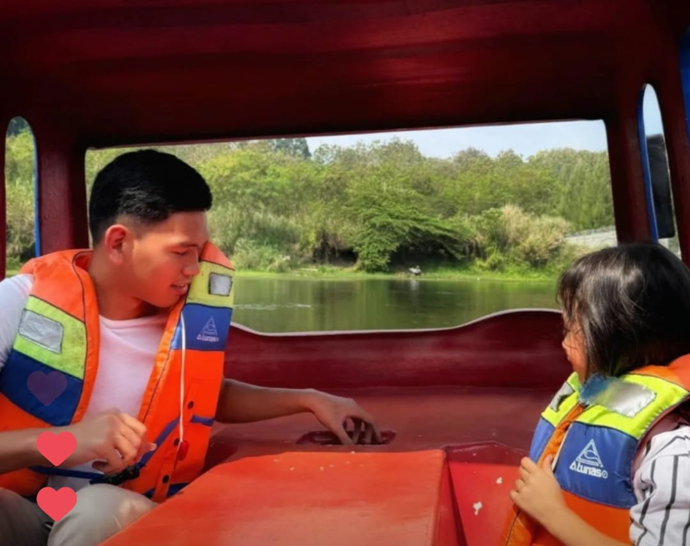
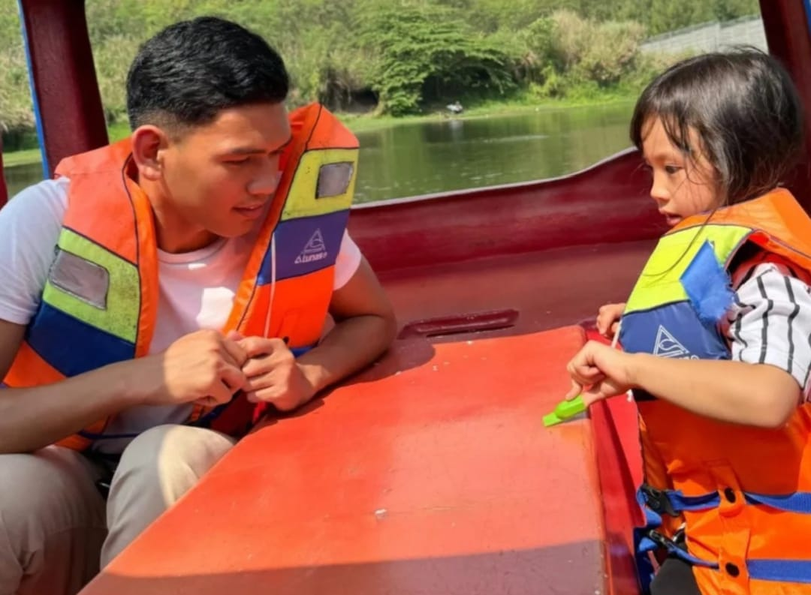

Tepi Danau Kota Baru Parahyangan
Name: Simon Joel Roring
NIM: 2281018


I forgot the date but it's in my holiday. I went to Lakeside Of Kota Baru Parahyangan With my aunty and my nephew in the morning.
When we arrived, we went to the Cafe for breakfast with Fried Rice Cakalang And lemon Juice. After finishing breakfast we went out and bought carrot and some vegetables for the lamb and rabbit to feed them.
After we fed them, some ideas came to my mind that I think I would like to go around the lake by boat.
Then we went around and the guide told that in this lake there are snakes and monitor lizards living inside.
The lake was so amazing to see. After that, my uncle picked us up with his car, and we were very happy.
Moodle Unai
Online System Modul